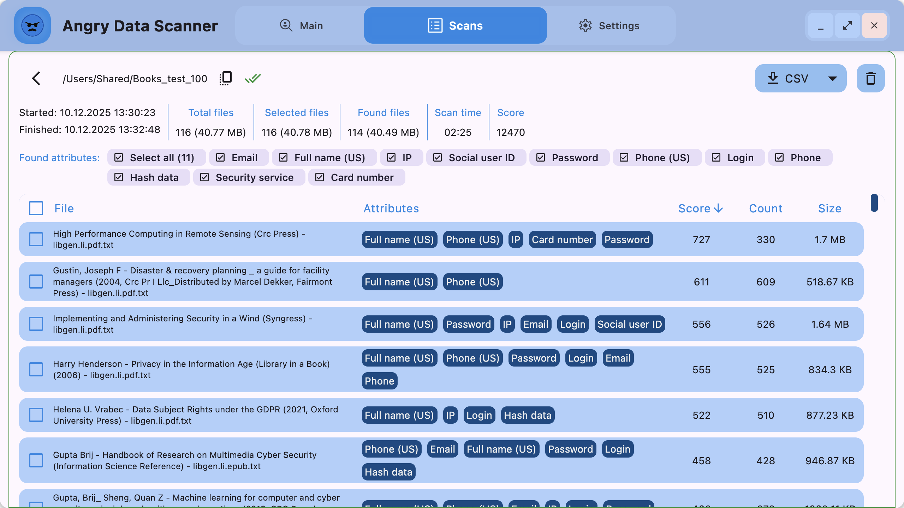

Discover how organizations across different industries use Angry Data Scanner to protect sensitive data and ensure compliance
A leak hunting team scans network folder and ensure that it does not contain source code
An employee finds and deletes files containing card numbers to comply with PCI DSS
A banking employee scans network folder to ensure that it does not contain PII of VIP clients
A boss scans a shared folder of the sales team so they don't have client contacts there
Law enforcements need to discover a traces of cryptocurrency on a laptop
A cybersecurity officer need to validate that the database does not contain a personal data
Conduct security audits, identify data leaks, and ensure sensitive information is properly protected across your infrastructure.
Ensure compliance with regulations like GDPR, PCI DSS, HIPAA, and other data protection standards.
Scan repositories and infrastructure to prevent accidental exposure of sensitive data in code or configurations.
Discover traces of sensitive data, cryptocurrency, and other evidence during digital investigations.
